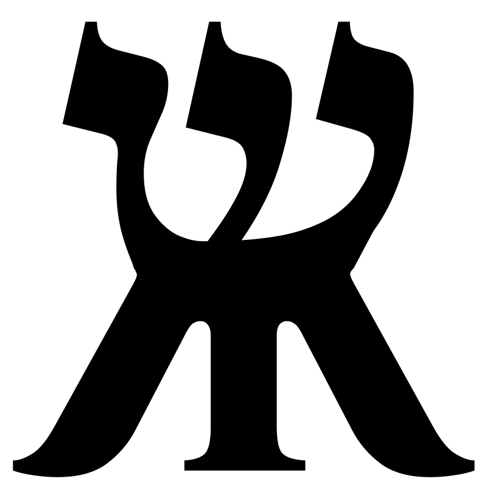

Piano arrangement by André Wils, adapted by me for a calmer rendition.
❈ logo.canvas

ℹ user.about
❯ Wendy Shoshana Zhulkovsky ❮
Interlinked interdisciplinary intermediate internetter interested in interacting with the intersection of interface, intercommunication, and intermedia.